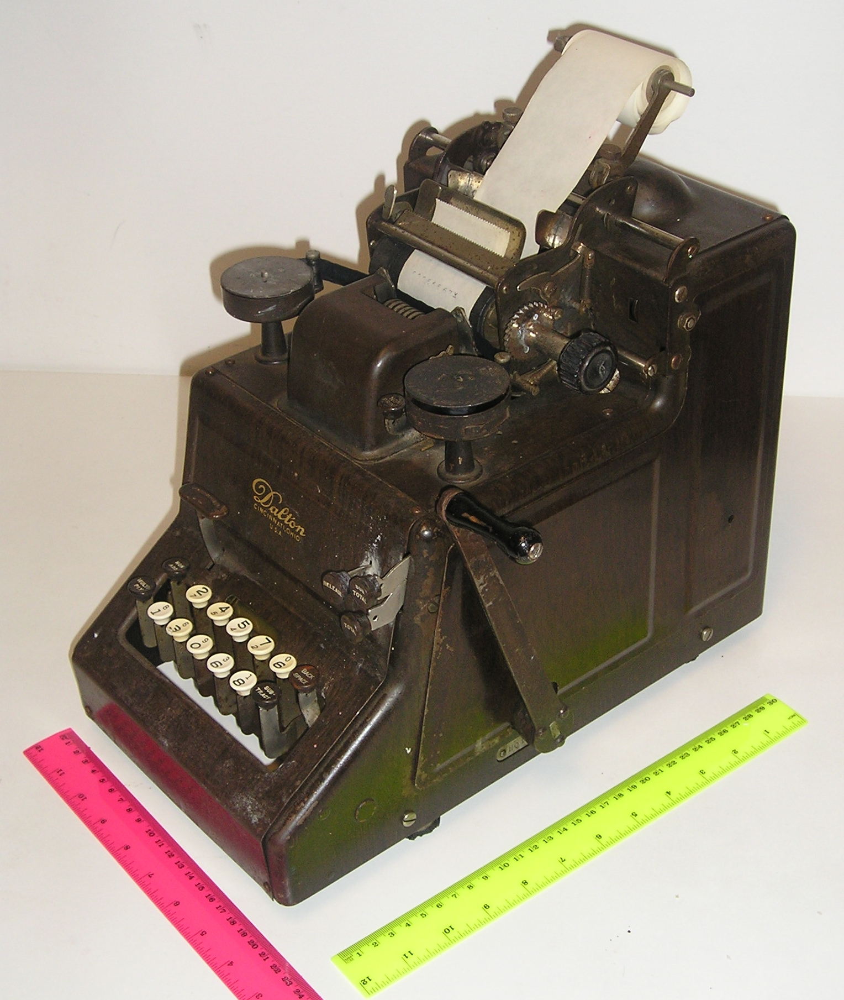

When Machines Learned to Calculate
Long before computers occupied desks, inventors imagined machines that could take on the work of calculation.

MECHANICAL CALCULATOR · THE 19TH CENTURY
For centuries, calculation depended on human hands and minds. Tables of numbers were painstakingly prepared, and errors could travel into navigation, engineering, and science.
Charles Babbage imagined a different approach. His Difference Engine was designed to calculate mathematical tables mechanically, reducing the repetitive work that made such calculations slow and vulnerable to error.
Then came a more ambitious vision: the Analytical Engine. Rather than performing just one defined task, it was designed around operations that could be directed by instructions. The machine was never completed in Babbage's lifetime, but its design anticipated ideas central to later general-purpose computing.
The computer age would take generations to arrive. But the ambition behind it was already taking shape: machines should not merely help us calculate. They might follow instructions and carry out complex sequences of operations.